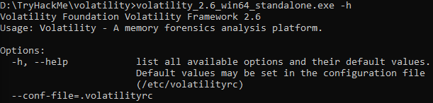

Volatility
Platform : Windows 10 Volatility Version : 2.6 Language : Bahasa Indonesia Sebelum mengerjakan di sarankan untuk membuat folder baru khusus untuk room ini, karena akan banyak melakukan penyimpanan data hasil. Room ini akan mengenalkan peralatan untuk forensik dengan menganalisa data yang di dapat dari Random Access Memory (RAM) yaitu volatility
-
Task 1 - Intro
Install Volatility untuk Windows dan extract lalu buka
cmddancdke dimana file tadi di extract. Pada saat menjalankan volatility untuk pertama kali, volatility dapat di setup dengan mengetik di terminal yang sudah ada di directory dimana volatility di ekstrak dengan commandvolatility_2.6_win64_standalone.exe -h. Jika berhasil maka akan keluar hasil seperti yang di gambar.  Jika tidak ada error, maka program sudah bisa di gunakan - Task 2 - Obtaining Memory Sample Semua jawaban ada di bacaan yang di sediakan
-
Task 3 - Examining Our Patient
KlikDownload task files, taruh di tempat yang mudah di arahkan di terminal, misal dimana volatility di ekstrak.-
1. First, let's figure out what profile we need to use.
Profiles determine how Volatility treats our memory image since
every version of Windows is a little bit different. Let's see our
options now with the command
volatility -f MEMORY_FILE.raw imageinfo
Ketikvolatility_2.6_win64_standalone.exe -f cridex.vmem imageinfo. Jika berhasil, anda akan mendapat infromasi berupa profil yang di tandai denganSuggested Profile(s) -
2. Do this now with the command
volatility -f MEMORY_FILE.raw --profile=PROFILE pslist. What profile is correct for this memory image?
Jawaban dari nomor 1 -
3. Take a look through the processes within our image.
What is the process ID for the smss.exe process?
If results are scrolling off-screen, try piping your output into less
Jawaban dari nomor 2 -
3. Take a look through the processes within our image.
What is the process ID for the smss.exe process?
If results are scrolling off-screen, try piping your output into less
Jawaban dari nomor 2 -
4. In addition to viewing active processes, we can also view active network
connections at the time of image creation! Let's do this now with the command
volatility -f MEMORY_FILE.raw --profile=PROFILE netscan. Unfortunately, something not great is going to happen here due to the sheer age of the target operating system as the command netscan doesn't support it.
Jika command di jalankan, akan keluarERROR : volatility.debug : This command does not support the profile WinXPSP2x86 -
5. It's fairly common for malware to attempt to hide itself and the process
associated with it. That being said, we can view intentionally hidden processes
via the command
psxview. What process has only one 'False' listed?
Gunakan command yang sebelumnya dan ganti bagian akhir jadivolatility_2.6_win64_standalone.exe -f cridex.vmem --profile=PROFILE_DARI_NOMOR_2 psxview. -
6. In addition to viewing hidden processes via psxview, we can also check this with a
greater focus via the command
ldrmodules. Three columns will appear here in the middle, InLoad, InInit, InMem. If any of these are false, that module has likely been injected which is a really bad thing. On a normal system the grep statement above should return no output. Which process has all three columns listed as 'False' (other than System)?
Sama seperti nomor 5, gunakan command yang sebelumnya dan ganti bagian belakang menjadivolatility_2.6_win64_standalone.exe -f cridex.vmem --profile=PROFILE_DARI_NOMOR_2 ldrmodules. -
7. Processes aren't the only area we're concerned with when we're examining a machine.
Using the
apihookscommand we can view unexpected patches in the standard system DLLs. If we see an instance where Hooking module:<unknown>that's really bad. This command will take a while to run, however, it will show you all of the extraneous code introduced by the malware.
Tidak perlu di jawab, tapi jika anda mencoba menjalankan dengan tagapihooksdan stuck pencetctrl+cuntuk membatalkan program -
8. Injected code can be a huge issue and is highly indicative of very very bad things.
We can check for this with the command
malfind. Using the full commandvolatility -f MEMORY_FILE.raw --profile=PROFILE malfind -D <Destination Directory>` we can not only find this code, but also dump it to our specified directory. Let's do this now! We'll use this dump later for more analysis. How many files does this generate?
Command ini akan mengekstrak data daricridex.vmemdan akandumpdata tersebut untuk di simpan. Buat folder baru untuk menyimpan hasil. Gunakan command`volatility_2.6_win64_standalone.exe -f cridex.vmem --profile=PROFILE_DARI_NOMOR_2 malfind -D LOKASI_FOLDER_BARU -
9.Last but certainly not least we can view all of the DLLs loaded into memory.
DLLs are shared system libraries utilized in system processes.
These are commonly subjected to hijacking and other side-loading attacks,
making them a key target for forensics. Let's list all of the DLLs in memory now
with the command
dlllist
volatility_2.6_win64_standalone.exe -f cridex.vmem --profile=PROFILE_DARI NOMOR 2 dllist> -
10. Now that we've seen all of the DLLs running in memory, let's go a step further
and pull them out! Do this now with the command
`volatility -f MEMORY_FILE.raw --profile=PROFILE --pid=PID dlldump -D <Destination Directory>where the PID is the process ID of the infected process we identified earlier (questions five and six). How many DLLs does this end up pulling?
Untuk menemukan PID yang di inginkan pertanyaan, scroll up dari hasil yang sebelumnya dari nomor 5 dan 6. Ada 1 PID yang sama dari hasil 2 nomor tersebut. Untuk flag-Ddi sarankan untuk membuat folder baru lagi.
-
1. First, let's figure out what profile we need to use.
Profiles determine how Volatility treats our memory image since
every version of Windows is a little bit different. Let's see our
options now with the command
-
Task 4 - Post Actions
-
1. Upload the extracted files to VirusTotal for examination.
-
2. Upload the extracted files to Hybrid Analysis for examination -
Note, this will also upload to VirusTotal but for the sake of demonstration we
have done this separately.
-
3. What malware has our sample been infected with? You can find this in the
results of VirusTotal and Hybrid Anaylsis.
Untuk task 4 ini, ada kendala yang di temukan. Data yang di upload ke VirusTotal dan Hybrid Analysis adalah hasil ekstarsi dari nomor 10 task 3. Namun jika di upload baik pada VirusTotal atau Hybrid Analysis, hasil tidak di dapatkan. Setelah melakukan simple googling, di dapat hasil dan juga penjelasannya dari sini.
-
1. Upload the extracted files to VirusTotal for examination.
- Task 5 - Extra Credits